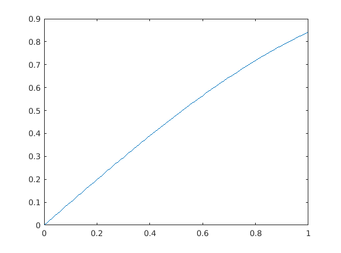

Contents
Example of replab usage
Plottons la fonction 
x =[0:0.01:1]; plot(x,sin(x)); % Run first replab_addpaths; n = 4; % construct Sn Sn = replab.PermutationGroup.fromGenerators([2:n 1], [2 1 3:n]); % sample permutation; alternative is to use Sn.sample or Sn.sampleUniformlyx g = randperm(n); disp(sprintf('We factor %s\n', num2str(g))); w = Sn.factorization(g); disp(sprintf('to obtain factor %s\n', w.str)); g1 = Sn.evaluateWord(w); disp(sprintf('evaluated back to %s\n', num2str(g))); assert(isequal(g, g1)); % ceci est un commentaire
We factor 4 3 1 2 to obtain factor a^-2 b evaluated back to 4 3 1 2
Un peu de texte ici
Nouvelle section
disp('We use this to construct representations and evaluate them');
rho = Sn.naturalRepresentation;
g = randperm(n);
h = randperm(n);
gh = g(h);
rho.image(g) * rho.image(h)
rho.image(gh)
We use this to construct representations and evaluate them
ans =
0 0 1 0
1 0 0 0
0 0 0 1
0 1 0 0
ans =
0 0 1 0
1 0 0 0
0 0 0 1
0 1 0 0
Un peu de texte par là
[subrho1 U1] = rho.isotypic.component(1)
[subrho2 U2] = rho.isotypic.component(2)
M = rho.centralizerAlgebra.project(rand(n,n))
blocks = rho.isotypic.blocksOf(M)
blocks{1}
blocks{2}
Warning: Warning: qdimsum.jar not in the Java path, using Matlab code as
fallback.
subrho1 =
Unitary representation of dimension 1 with generator images
- a:
1
- b:
1
U1 =
0.5000
0.5000
0.5000
0.5000
subrho2 =
Unitary representation of dimension 3 with generator images
- a:
-0.17338 -0.91853 -0.3553
0.39492 -0.39533 0.82931
0.90221 -0.0034686 -0.43129
- b:
0.88238 -0.47054 -0.0028391
-0.47054 -0.88231 -0.011357
-0.0028391 -0.011357 0.99993
U2 =
-0.2816 0.8003 -0.1737
-0.6246 -0.5716 -0.1820
0.6980 -0.1716 -0.4831
0.2082 -0.0571 0.8387
M =
0.3740 0.5061 0.5061 0.5061
0.5061 0.3740 0.5061 0.5061
0.5061 0.5061 0.3740 0.5061
0.5061 0.5061 0.5061 0.3740
blocks =
[1.8922] [3x3 double]
ans =
1.8922
ans =
-0.1321 0.0000 -0.0000
0.0000 -0.1321 -0.0000
-0.0000 -0.0000 -0.1321